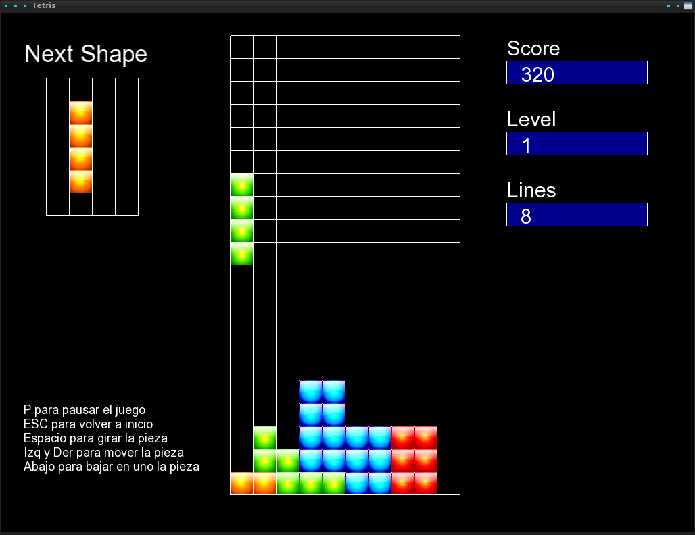
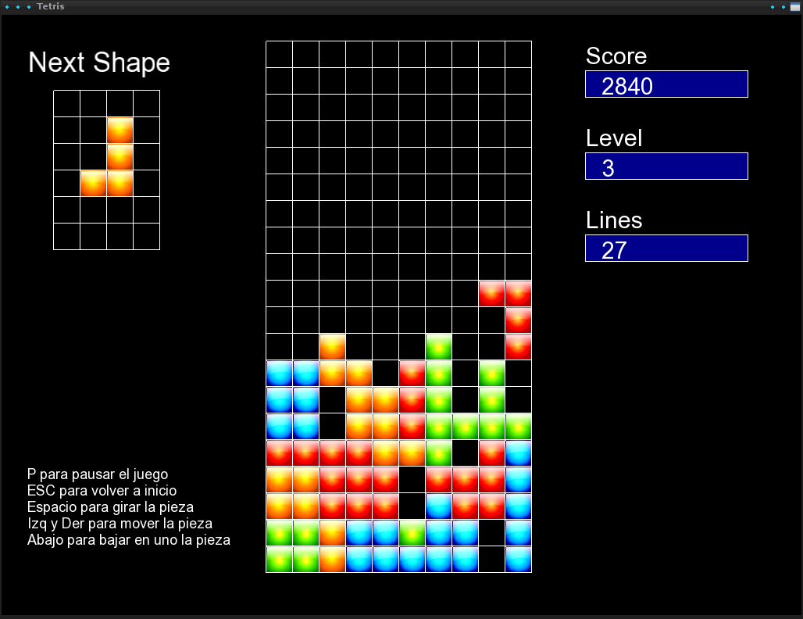
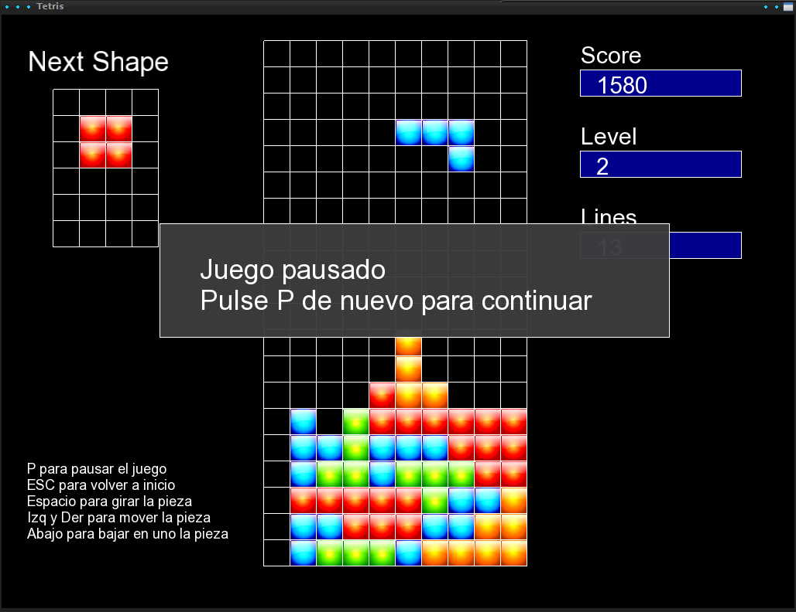
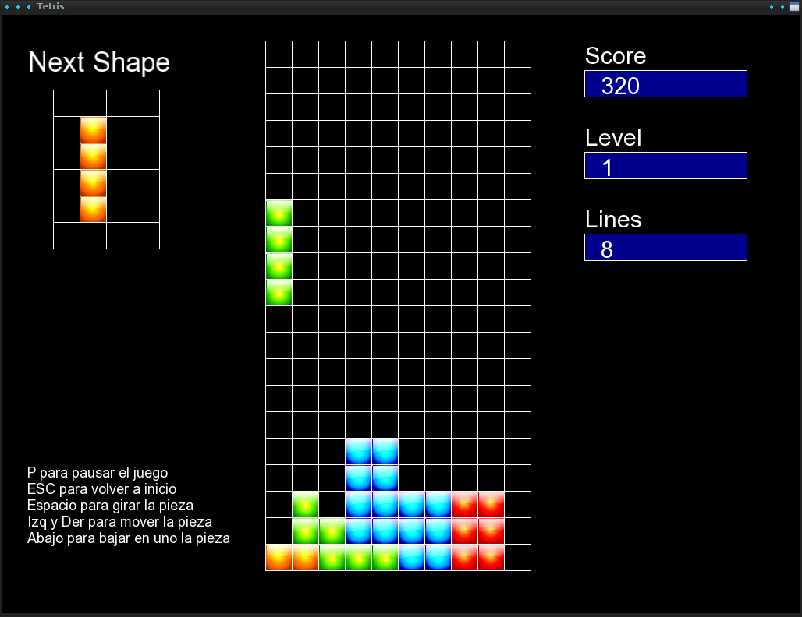
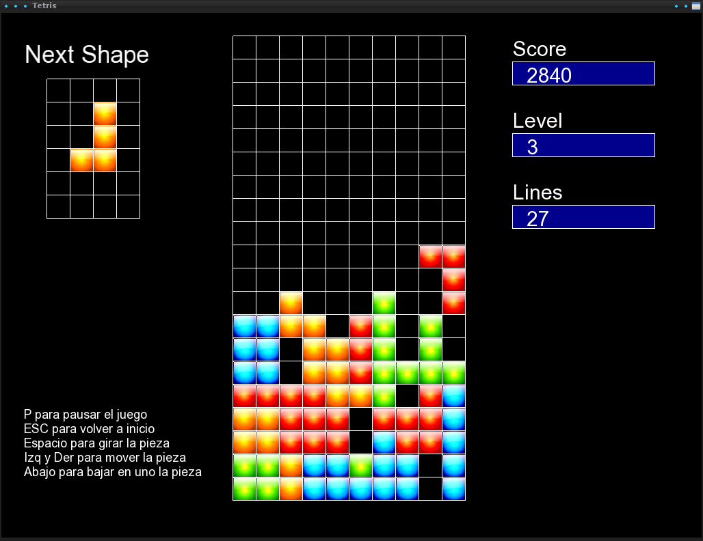
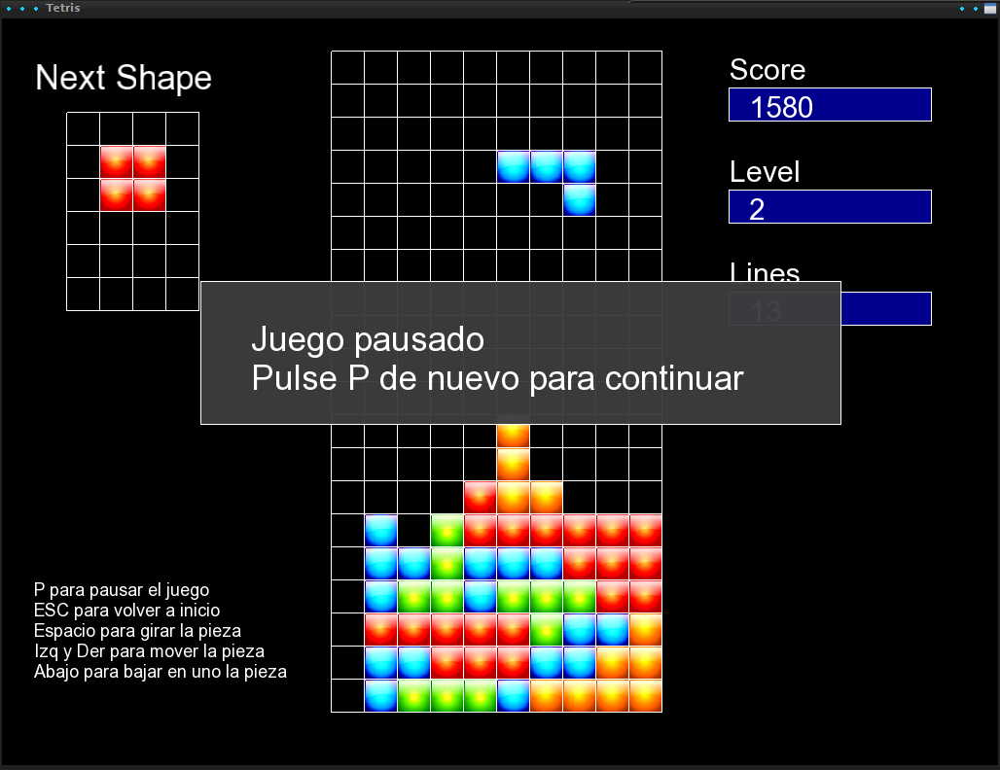

Descripción:
Realizado con C++ y SFML (inicialmente se hizo con SDL y luego se portó a SFML). Utiliza la librería boost para un par de funciones concretas relacionadas con los ficheros.
Es una versión simple del tetris, en el que se juega infinitamente hasta que se pierde. Los bloques van cayendo más rápido en cada nivel hasta un tope. Las piezas pueden aparecer en una rotación aleatoria y con colores aleatorias, dificultando al jugador el razonamiento sobre que pieza y las veces a dar para colocarla donde desea
En el historial de commits se puede ver que se metieron elementos nuevos y luego se han retirado, esto es porque se ha querido dejar el juego finalizado como el clásico Tetris y hacer la idea original del juego en otro proyecto derivado de este.
La puntuación es básica, sólo tiene en cuenta las líneas eliminadas y cuántas de golpe (a más lineas, mayor puntuación. Pero no tiene en cuenta si ha bajado rápido la ficha o no.
Por otro lado, para un juego de Tetris más completo, faltaría leer la entrada en tiempo real, establecer el wall kick y el soft y hard drop con su correspondiente puntuación. Buena información sobre el Tetris, tanto en historia como bases y fórmulas del juego (descubierto posteriormente al projecto) es un artículo por Colin Fahey.
Demo:
Capturas de pantalla:
 




